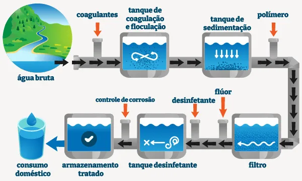

A importância da água do planeta é de tamanha proporção, posto que é um elemento essencial para a sobrevivência de animais e vegetais na Terra, além de fazer parte de inúmeras atividades dos seres humanos. A falta de água é uma ameaça, uma vez que a água é fonte de vida. Estamos tão habituados à presença da água que só damos conta da sua importância quando ela nos faz falta, mas isso precisa mudar. Preservar os recursos hídricos é preservar a nossa existência. Para se ter uma ideia, a maior parte das células do nosso corpo possui água, por isso ingerir água é uma necessidade do corpo humano. Importância da água para os seres vivos A água é a fonte de vida de todos os seres vivos. Por isso, nas expedições em outros planetas, a água é um dos primeiros recursos procurados, pois pode ser um indicador da existência de vida.
Outro desafio significativo é a vulnerabilidade da Guiné-Bissau às alterações climáticas, que afetam diretamente a agricultura, as pescas e as infraestruturas. Sem adaptação, as alterações climáticas podem levar a um aumento da pobreza e a uma redução significativa do PIB real per capita. A boa governação, a estabilidade política e um clima empresarial favorável são fundamentais para reforçar a resistência às alterações climáticas e promover o desenvolvimento sustentável.
A Guiné-Bissau possui uma rica riqueza natural, mas enfrenta obstáculos significativos ao desenvolvimento, como elevadas taxas de pobreza e instabilidade política. A dependência excessiva da castanha de caju e a baixa taxa de acesso à eletricidade são exemplos de como esses desafios impactam diretamente a economia e as populações.
A água suja refere-se a qualquer tipo de água que não é potável e que contém contaminantes, como sujeira, produtos químicos, e microorganismos. Essa água pode ser proveniente de diversas fontes, como esgoto, chuvas, ou até mesmo de processos industriais. É crucial entender a composição da água suja, pois ela pode impactar a saúde pública e o meio ambiente. O tratamento adequado é essencial para evitar a contaminação de reservatórios e garantir a segurança do abastecimento de água.
As fontes de água suja são variadas e incluem esgoto doméstico, águas pluviais contaminadas, e efluentes industriais. Cada uma dessas fontes apresenta riscos diferentes, exigindo métodos específicos de tratamento. Por exemplo, o esgoto doméstico contém uma mistura de resíduos orgânicos e químicos, enquanto os efluentes industriais podem incluir metais pesados e substâncias tóxicas. Identificar a origem da água suja é o primeiro passo para um tratamento eficaz e seguro.
A água suja pode causar uma série de problemas de saúde, desde doenças gastrointestinais até infecções graves. O contato com água contaminada pode resultar em surtos de doenças como hepatite A, cólera e outras infecções transmitidas pela água. Além disso, a exposição prolongada a contaminantes químicos pode levar a problemas crônicos de saúde. Portanto, é vital que empresas e residências adotem medidas para evitar a contaminação e o uso de água suja.
O tratamento de água suja envolve uma série de processos que visam remover contaminantes e tornar a água segura para uso. Os métodos mais comuns incluem a filtração, a desinfecção e a sedimentação. Cada método tem suas vantagens e desvantagens, e a escolha do tratamento adequado depende da composição da água suja. É importante que as fábricas de reservatórios metálicos, como a TCL, considerem essas variáveis ao projetar sistemas de armazenamento e tratamento de água.